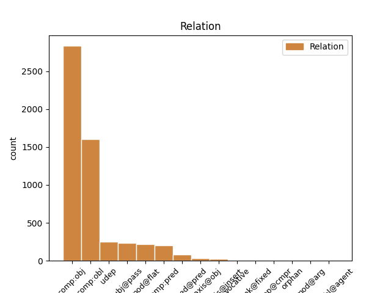
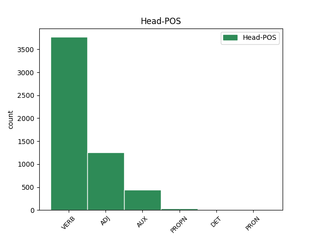
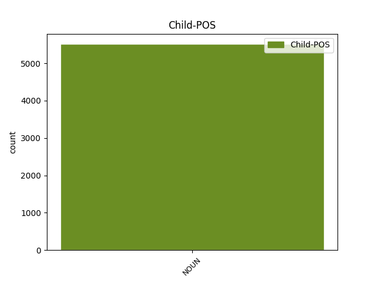

Distribution of features within this leaf



Agreement Rules sorted by frequency.
- When the dependent token is the direct object complements(comp:obj) of the head token, and the head token is VERB and the dependent token is NOUN.
1 Testy _ _ _ _ 0 _ _ _
2 praktyczne _ _ _ _ 0 _ _ _
3 prowadzone _ _ _ _ 0 _ _ _
4 przez _ _ _ _ 0 _ _ _
5 MRAG _ _ _ _ 0 _ _ _
6 na _ _ _ _ 0 _ _ _
7 statkach _ _ _ _ 0 _ _ _
8 rybackich _ _ _ _ 0 _ _ _
9 pokazały pokazać VERB praet:pl:m3:perf Animacy=Inan|Aspect=Perf|Gender=Masc|Mood=Ind|Number=Plur|Tense=Past|VerbForm=Fin|Voice=Act 0 _ _ _
10 znacznie _ _ _ _ 0 _ _ _
11 różniące _ _ _ _ 0 _ _ _
12 się _ _ _ _ 0 _ _ _
13 marginesy margines NOUN subst:pl:acc:m3 Animacy=Inan|Case=Acc|Gender=Masc|Number=Plur 9 comp:obj _ _
14 przy _ _ _ _ 0 _ _ _
15 małej _ _ _ _ 0 _ _ _
16 liczbie _ _ _ _ 0 _ _ _
17 czynników _ _ _ _ 0 _ _ _
18 korelacji _ _ _ _ 0 _ _ _
19 . _ _ _ _ 0 _ _ _
1 Wykończyła wykończyć VERB praet:sg:f:perf Aspect=Perf|Gender=Fem|Mood=Ind|Number=Sing|Tense=Past|VerbForm=Fin|Voice=Act 0 _ _ _
2 m _ _ _ _ 0 _ _ _
3 go _ _ _ _ 0 _ _ _
4 indyjskimi _ _ _ _ 0 _ _ _
5 tapetami tapeta NOUN subst:pl:inst:f Case=Ins|Gender=Fem|Number=Plur 1 comp:obl _ _
6 z _ _ _ _ 0 _ _ _
7 wystawy _ _ _ _ 0 _ _ _
8 . _ _ _ _ 0 _ _ _
1 PRAGNĄC _ _ _ _ 0 _ _ _
2 uzupełnić _ _ _ _ 0 _ _ _
3 postanowienia _ _ _ _ 0 _ _ _
4 zawarte _ _ _ _ 0 _ _ _
5 w _ _ _ _ 0 _ _ _
6 Porozumieniu _ _ _ _ 0 _ _ _
7 EOG _ _ _ _ 0 _ _ _
8 umową _ _ _ _ 0 _ _ _
9 dwustronną _ _ _ _ 0 _ _ _
10 dotyczącą dotyczyć ADJ pact:sg:inst:f:imperf:aff Aspect=Imp|Case=Ins|Gender=Fem|Number=Sing|Polarity=Pos|VerbForm=Part|Voice=Act 0 _ _ _
11 nawigacji nawigacja NOUN subst:sg:gen:f Case=Gen|Gender=Fem|Number=Sing 10 comp:obl _ _
12 satelitarnej _ _ _ _ 0 _ _ _
13 w _ _ _ _ 0 _ _ _
14 sprawach _ _ _ _ 0 _ _ _
15 mających _ _ _ _ 0 _ _ _
16 szczególne _ _ _ _ 0 _ _ _
17 znaczenie _ _ _ _ 0 _ _ _
18 dla _ _ _ _ 0 _ _ _
19 Norwegii _ _ _ _ 0 _ _ _
20 , _ _ _ _ 0 _ _ _
21 Wspólnoty _ _ _ _ 0 _ _ _
22 i _ _ _ _ 0 _ _ _
23 jej _ _ _ _ 0 _ _ _
24 państw _ _ _ _ 0 _ _ _
25 członkowskich _ _ _ _ 0 _ _ _
26 , _ _ _ _ 0 _ _ _
1 Stąd _ _ _ _ 0 _ _ _
2 właśnie _ _ _ _ 0 _ _ _
3 szkoła szkoła NOUN subst:sg:nom:f Case=Nom|Gender=Fem|Number=Sing 6 subj@pass _ _
4 Platona _ _ _ _ 0 _ _ _
5 nazwana _ _ _ _ 0 _ _ _
6 została zostać AUX praet:sg:f:perf Aspect=Perf|Gender=Fem|Mood=Ind|Number=Sing|Tense=Past|VerbForm=Fin|Voice=Act 0 _ _ _
7 Akademią _ _ _ _ 0 _ _ _
8 . _ _ _ _ 0 _ _ _
1 Głosowanie _ _ _ _ 0 _ _ _
2 odbędzie _ _ _ _ 0 _ _ _
3 się _ _ _ _ 0 _ _ _
4 w _ _ _ _ 0 _ _ _
5 piątek _ _ _ _ 0 _ _ _
6 24 24 ADJ adj:sg:gen:m3:pos Animacy=Inan|Case=Gen|Degree=Pos|Gender=Masc|Number=Sing|NumForm=Digit|NumType=Ord 0 _ _ _
7 kwietnia kwiecień NOUN subst:sg:gen:m3 Animacy=Inan|Case=Gen|Gender=Masc|Number=Sing 6 mod@flat _ _
8 2009 _ _ _ _ 0 _ _ _
9 r _ _ _ _ 0 _ _ _
10 . _ _ _ _ 0 _ _ _
1 Ponieważ _ _ _ _ 0 _ _ _
2 nigdy _ _ _ _ 0 _ _ _
3 , _ _ _ _ 0 _ _ _
4 tak _ _ _ _ 0 _ _ _
5 na _ _ _ _ 0 _ _ _
6 prawdę _ _ _ _ 0 _ _ _
7 , _ _ _ _ 0 _ _ _
8 nie _ _ _ _ 0 _ _ _
9 były być AUX praet:pl:f:imperf Aspect=Imp|Gender=Fem|Mood=Ind|Number=Plur|Tense=Past|VerbForm=Fin|Voice=Act 0 _ _ _
10 śmy _ _ _ _ 0 _ _ _
11 dobrymi _ _ _ _ 0 _ _ _
12 przyjacółkami przyjaciółka NOUN subst:pl:inst:f Case=Ins|Gender=Fem|Number=Plur 9 comp:pred _ SpaceAfter=No
13 . _ _ _ _ 0 _ _ _
1 zmieniającej zmieniać ADJ pact:sg:gen:f:imperf:aff Aspect=Imp|Case=Gen|Gender=Fem|Number=Sing|Polarity=Pos|VerbForm=Part|Voice=Act 0 _ _ _
2 dyrektywę dyrektywa NOUN subst:sg:acc:f Case=Acc|Gender=Fem|Number=Sing 1 comp:obj _ _
3 2003/88/WE _ _ _ _ 0 _ _ _
4 dotyczącą _ _ _ _ 0 _ _ _
5 niektórych _ _ _ _ 0 _ _ _
6 aspektów _ _ _ _ 0 _ _ _
7 organizacji _ _ _ _ 0 _ _ _
8 czasu _ _ _ _ 0 _ _ _
9 pracy _ _ _ _ 0 _ _ _
1 Włosy _ _ _ _ 0 _ _ _
2 stawały stawać VERB praet:pl:m3:imperf Animacy=Inan|Aspect=Imp|Gender=Masc|Mood=Ind|Number=Plur|Tense=Past|VerbForm=Fin|Voice=Act 0 _ _ _
3 mi _ _ _ _ 0 _ _ _
4 dęba dąb NOUN subst:sg:gen:m2 Animacy=Nhum|Case=Gen|Gender=Masc|Number=Sing 2 udep _ SpaceAfter=No
5 , _ _ _ _ 0 _ _ _
6 gdy _ _ _ _ 0 _ _ _
7 dotarł _ _ _ _ 0 _ _ _
8 em _ _ _ _ 0 _ _ _
9 do _ _ _ _ 0 _ _ _
10 Pierwszej _ _ _ _ 0 _ _ _
11 Zasłony _ _ _ _ 0 _ _ _
12 , _ _ _ _ 0 _ _ _
13 i _ _ _ _ 0 _ _ _
14 wyraźnie _ _ _ _ 0 _ _ _
15 słyszał _ _ _ _ 0 _ _ _
16 em _ _ _ _ 0 _ _ _
17 trzask _ _ _ _ 0 _ _ _
18 wyładowań _ _ _ _ 0 _ _ _
19 . _ _ _ _ 0 _ _ _
1 uwzględniając _ _ _ _ 0 _ _ _
2 Traktat _ _ _ _ 0 _ _ _
3 dotyczący _ _ _ _ 0 _ _ _
4 przyłączenia _ _ _ _ 0 _ _ _
5 Republiki _ _ _ _ 0 _ _ _
6 Grecji _ _ _ _ 0 _ _ _
7 do _ _ _ _ 0 _ _ _
8 Wspólnoty _ _ _ _ 0 _ _ _
9 Europejskiej _ _ _ _ 0 _ _ _
10 oraz _ _ _ _ 0 _ _ _
11 do _ _ _ _ 0 _ _ _
12 Europejskiej _ _ _ _ 0 _ _ _
13 Wspólnoty _ _ _ _ 0 _ _ _
14 Energii _ _ _ _ 0 _ _ _
15 Atomowej _ _ _ _ 0 _ _ _
16 [ _ _ _ _ 0 _ _ _
17 1 _ _ _ _ 0 _ _ _
18 ] _ _ _ _ 0 _ _ _
19 , _ _ _ _ 0 _ _ _
20 podpisany podpisać ADJ ppas:sg:acc:m3:perf:aff Animacy=Inan|Aspect=Perf|Case=Acc|Gender=Masc|Number=Sing|Polarity=Pos|VerbForm=Part|Voice=Pass 0 _ _ _
21 dnia dzień NOUN subst:sg:gen:m3 Animacy=Inan|Case=Gen|Gender=Masc|Number=Sing 20 udep _ _
22 28 _ _ _ _ 0 _ _ _
23 maja _ _ _ _ 0 _ _ _
24 1979 _ _ _ _ 0 _ _ _
25 r _ _ _ _ 0 _ _ _
26 . _ _ _ _ 0 _ _ _
27 , _ _ _ _ 0 _ _ _
28 w _ _ _ _ 0 _ _ _
29 szczególności _ _ _ _ 0 _ _ _
30 jego _ _ _ _ 0 _ _ _
31 art _ _ _ _ 0 _ _ _
32 . _ _ _ _ 0 _ _ _
33 146 _ _ _ _ 0 _ _ _
34 dołączonego _ _ _ _ 0 _ _ _
35 do _ _ _ _ 0 _ _ _
36 niego _ _ _ _ 0 _ _ _
37 Aktu _ _ _ _ 0 _ _ _
38 , _ _ _ _ 0 _ _ _
1 Mój _ _ _ _ 0 _ _ _
2 rozmówca _ _ _ _ 0 _ _ _
3 okazał okazać VERB praet:sg:m1:perf Animacy=Hum|Aspect=Perf|Gender=Masc|Mood=Ind|Number=Sing|Tense=Past|VerbForm=Fin|Voice=Act 0 _ _ _
4 się _ _ _ _ 0 _ _ _
5 sympatycznym _ _ _ _ 0 _ _ _
6 maluchem maluch NOUN subst:sg:inst:m1 Animacy=Hum|Case=Ins|Gender=Masc|Number=Sing 3 comp:pred@pred _ SpaceAfter=No
7 , _ _ _ _ 0 _ _ _
8 a _ _ _ _ 0 _ _ _
9 pozostali _ _ _ _ 0 _ _ _
10 wydawali _ _ _ _ 0 _ _ _
11 się _ _ _ _ 0 _ _ _
12 teraz _ _ _ _ 0 _ _ _
13 zupełnie _ _ _ _ 0 _ _ _
14 niegroźni _ _ _ _ 0 _ _ _
15 , _ _ _ _ 0 _ _ _
16 roztańczeni _ _ _ _ 0 _ _ _
17 i _ _ _ _ 0 _ _ _
18 weseli _ _ _ _ 0 _ _ _
19 . _ _ _ _ 0 _ _ _
1 Nazwa _ _ _ _ 0 _ _ _
2 środka _ _ _ _ 0 _ _ _
3 pomocy _ _ _ _ 0 _ _ _
4 Razvojne _ _ _ _ 0 _ _ _
5 podpore _ _ _ _ 0 _ _ _
6 Pomurski Pomurski PROPN subst:sg:nom:n:ncol Case=Nom|Gender=Neut|Number=Sing 0 _ _ _
7 regiji regiji NOUN subst:sg:nom:n:ncol Case=Nom|Gender=Neut|Number=Sing 6 mod@flat _ _
8 – _ _ _ _ 0 _ _ _
9 regionalni _ _ _ _ 0 _ _ _
10 cilji _ _ _ _ 0 _ _ _
1 Wypadli _ _ _ _ 0 _ _ _
2 nieźle _ _ _ _ 0 _ _ _
3 na _ _ _ _ 0 _ _ _
4 tle _ _ _ _ 0 _ _ _
5 orkiestry _ _ _ _ 0 _ _ _
6 gminnej _ _ _ _ 0 _ _ _
7 i _ _ _ _ 0 _ _ _
8 nawet _ _ _ _ 0 _ _ _
9 Terzi _ _ _ _ 0 _ _ _
10 oraz _ _ _ _ 0 _ _ _
11 inni _ _ _ _ 0 _ _ _
12 dowódcy _ _ _ _ 0 _ _ _
13 partyzanccy _ _ _ _ 0 _ _ _
14 to _ _ _ _ 0 _ _ _
15 potwierdzili potwierdzić VERB praet:pl:m1:perf Animacy=Hum|Aspect=Perf|Gender=Masc|Mood=Ind|Number=Plur|Tense=Past|VerbForm=Fin|Voice=Act 0 _ _ _
16 : _ _ _ _ 0 _ _ _
17 dzielni _ _ _ _ 0 _ _ _
18 chłopcy chłopiec NOUN subst:pl:nom:m1 Animacy=Hum|Case=Nom|Gender=Masc|Number=Plur 15 parataxis@obj _ SpaceAfter=No
19 , _ _ _ _ 0 _ _ _
20 spisali _ _ _ _ 0 _ _ _
21 się _ _ _ _ 0 _ _ _
22 doskonale _ _ _ _ 0 _ _ _
23 . _ _ _ _ 0 _ _ _
1 Część _ _ _ _ 0 _ _ _
2 obcego _ _ _ _ 0 _ _ _
3 związku _ _ _ _ 0 _ _ _
4 została _ _ _ _ 0 _ _ _
5 wydalona _ _ _ _ 0 _ _ _
6 z _ _ _ _ 0 _ _ _
7 moczem _ _ _ _ 0 _ _ _
8 , _ _ _ _ 0 _ _ _
9 część część NOUN subst:sg:nom:f Case=Nom|Gender=Fem|Number=Sing 10 subj@pass _ _
10 rozłożona rozłożyć ADJ ppas:sg:nom:f:perf:aff Aspect=Perf|Case=Nom|Gender=Fem|Number=Sing|Polarity=Pos|VerbForm=Part|Voice=Pass 0 _ _ _
11 , _ _ _ _ 0 _ _ _
12 ale _ _ _ _ 0 _ _ _
13 - _ _ _ _ 0 _ _ _
14 jak _ _ _ _ 0 _ _ _
15 wykazały _ _ _ _ 0 _ _ _
16 analizy _ _ _ _ 0 _ _ _
17 - _ _ _ _ 0 _ _ _
18 część _ _ _ _ 0 _ _ _
19 wbudowała _ _ _ _ 0 _ _ _
20 się _ _ _ _ 0 _ _ _
21 w _ _ _ _ 0 _ _ _
22 tkanki _ _ _ _ 0 _ _ _
23 człowieka _ _ _ _ 0 _ _ _
24 . _ _ _ _ 0 _ _ _
1 Ta _ _ _ _ 0 _ _ _
2 technologia _ _ _ _ 0 _ _ _
3 budżetowa _ _ _ _ 0 _ _ _
4 jest _ _ _ _ 0 _ _ _
5 zaprezentowana _ _ _ _ 0 _ _ _
6 jako _ _ _ _ 0 _ _ _
7 nowość _ _ _ _ 0 _ _ _
8 , _ _ _ _ 0 _ _ _
9 będąca być ADJ pact:sg:nom:f:imperf:aff Aspect=Imp|Case=Nom|Gender=Fem|Number=Sing|Polarity=Pos|VerbForm=Part|Voice=Act 0 _ _ _
10 strażą straż NOUN subst:sg:inst:f Case=Ins|Gender=Fem|Number=Sing 9 comp:pred@pred _ _
11 przednią _ _ _ _ 0 _ _ _
12 inteligencji _ _ _ _ 0 _ _ _
13 budżetowej _ _ _ _ 0 _ _ _
14 , _ _ _ _ 0 _ _ _
15 ale _ _ _ _ 0 _ _ _
16 jest _ _ _ _ 0 _ _ _
17 obecnie _ _ _ _ 0 _ _ _
18 czymś _ _ _ _ 0 _ _ _
19 dość _ _ _ _ 0 _ _ _
20 starym _ _ _ _ 0 _ _ _
21 , _ _ _ _ 0 _ _ _
22 niczym _ _ _ _ 0 _ _ _
23 z _ _ _ _ 0 _ _ _
24 roku _ _ _ _ 0 _ _ _
25 1947 _ _ _ _ 0 _ _ _
26 . _ _ _ _ 0 _ _ _
1 " _ _ _ _ 0 _ _ _
2 To _ _ _ _ 0 _ _ _
3 duchy _ _ _ _ 0 _ _ _
4 to _ _ _ _ 0 _ _ _
5 zrobiły zrobić VERB praet:pl:m2:perf Animacy=Nhum|Aspect=Perf|Gender=Masc|Mood=Ind|Number=Plur|Tense=Past|VerbForm=Fin|Voice=Act 0 _ _ _
6 , _ _ _ _ 0 _ _ _
7 Wysoki _ _ _ _ 0 _ _ _
8 Sądzie sąd NOUN subst:sg:voc:m3 Animacy=Inan|Case=Voc|Gender=Masc|Number=Sing 5 parataxis@insert _ SpaceAfter=No
9 " _ _ _ _ 0 _ _ _
10 . _ _ _ _ 0 _ _ _
1 Palenie _ _ _ _ 0 _ _ _
2 jest _ _ _ _ 0 _ _ _
3 poważnym _ _ _ _ 0 _ _ _
4 problemem _ _ _ _ 0 _ _ _
5 zdrowia _ _ _ _ 0 _ _ _
6 publicznego _ _ _ _ 0 _ _ _
7 , _ _ _ _ 0 _ _ _
8 odpowiedzialnym _ _ _ _ 0 _ _ _
9 za _ _ _ _ 0 _ _ _
10 śmierć _ _ _ _ 0 _ _ _
11 kilkuset kilkaset DET num:pl:gen:m3:congr Animacy=Inan|Case=Gen|Gender=Masc|Number=Plur|NumType=Card|PronType=Ind 0 _ _ _
12 tysięcy tysiąc NOUN subst:pl:gen:m3 Animacy=Inan|Case=Gen|Gender=Masc|Number=Plur 11 unk@fixed _ _
13 osób _ _ _ _ 0 _ _ _
14 rocznie _ _ _ _ 0 _ _ _
15 , _ _ _ _ 0 _ _ _
16 w _ _ _ _ 0 _ _ _
17 tym _ _ _ _ 0 _ _ _
18 niepalących _ _ _ _ 0 _ _ _
19 . _ _ _ _ 0 _ _ _
1 Cena _ _ _ _ 0 _ _ _
2 , _ _ _ _ 0 _ _ _
3 moja _ _ _ _ 0 _ _ _
4 coquette coquette NOUN subst:sg:nom:f Case=Nom|Gender=Fem|Number=Sing 7 vocative _ SpaceAfter=No
5 , _ _ _ _ 0 _ _ _
6 tak _ _ _ _ 0 _ _ _
7 stała stać VERB praet:sg:f:imperf Aspect=Imp|Gender=Fem|Mood=Ind|Number=Sing|Tense=Past|VerbForm=Fin|Voice=Act 0 _ _ _
8 . _ _ _ _ 0 _ _ _
9 . _ _ _ _ 0 _ _ _
10 . _ _ _ _ 0 _ _ _
11 jak _ _ _ _ 0 _ _ _
12 ja _ _ _ _ 0 _ _ _
13 . _ _ _ _ 0 _ _ _
1 Tym _ _ _ _ 0 _ _ _
2 razem raz NOUN subst:sg:inst:m3 Animacy=Inan|Case=Ins|Gender=Masc|Number=Sing 4 udep _ _
3 najszybszy _ _ _ _ 0 _ _ _
4 był być AUX praet:sg:m3:imperf Animacy=Inan|Aspect=Imp|Gender=Masc|Mood=Ind|Number=Sing|Tense=Past|VerbForm=Fin|Voice=Act 0 _ _ _
5 " _ _ _ _ 0 _ _ _
6 Katamaran _ _ _ _ 0 _ _ _
7 " _ _ _ _ 0 _ _ _
8 , _ _ _ _ 0 _ _ _
9 wyprzedzając _ _ _ _ 0 _ _ _
10 " _ _ _ _ 0 _ _ _
11 Sampo _ _ _ _ 0 _ _ _
12 " _ _ _ _ 0 _ _ _
13 ( _ _ _ _ 0 _ _ _
14 kpt _ _ _ _ 0 _ _ _
15 . _ _ _ _ 0 _ _ _
16 Marek _ _ _ _ 0 _ _ _
17 Muzykiewicz _ _ _ _ 0 _ _ _
18 ) _ _ _ _ 0 _ _ _
19 i _ _ _ _ 0 _ _ _
20 " _ _ _ _ 0 _ _ _
21 Halsteam _ _ _ _ 0 _ _ _
22 " _ _ _ _ 0 _ _ _
23 ( _ _ _ _ 0 _ _ _
24 kpt _ _ _ _ 0 _ _ _
25 . _ _ _ _ 0 _ _ _
26 Zbigniew _ _ _ _ 0 _ _ _
27 Jałkoszuk _ _ _ _ 0 _ _ _
28 ) _ _ _ _ 0 _ _ _
29 . _ _ _ _ 0 _ _ _
1 Rzut _ _ _ _ 0 _ _ _
2 oka _ _ _ _ 0 _ _ _
3 na _ _ _ _ 0 _ _ _
4 " _ _ _ _ 0 _ _ _
5 Mawsu'at Mawsu'at PROPN subst:sg:acc:m3 Animacy=Inan|Case=Acc|Gender=Masc|Number=Sing 0 _ _ _
6 al-Jihad al-Jihad NOUN subst:sg:acc:m3 Animacy=Inan|Case=Acc|Gender=Masc|Number=Sing 5 unk@fixed _ _
7 al-Afghani _ _ _ _ 0 _ _ _
8 " _ _ _ _ 0 _ _ _
9 ( _ _ _ _ 0 _ _ _
10 oryginalny _ _ _ _ 0 _ _ _
11 arabski _ _ _ _ 0 _ _ _
12 tytuł _ _ _ _ 0 _ _ _
13 encyklopedii _ _ _ _ 0 _ _ _
14 ) _ _ _ _ 0 _ _ _
15 wystarczył _ _ _ _ 0 _ _ _
16 , _ _ _ _ 0 _ _ _
17 by _ _ _ _ 0 _ _ _
18 m _ _ _ _ 0 _ _ _
19 zrozumiał _ _ _ _ 0 _ _ _
20 , _ _ _ _ 0 _ _ _
21 że _ _ _ _ 0 _ _ _
22 być _ _ _ _ 0 _ _ _
23 może _ _ _ _ 0 _ _ _
24 mam _ _ _ _ 0 _ _ _
25 przed _ _ _ _ 0 _ _ _
26 sobą _ _ _ _ 0 _ _ _
27 klucz _ _ _ _ 0 _ _ _
28 do _ _ _ _ 0 _ _ _
29 poznania _ _ _ _ 0 _ _ _
30 sekretów _ _ _ _ 0 _ _ _
31 organizacji _ _ _ _ 0 _ _ _
32 Osama _ _ _ _ 0 _ _ _
33 bin _ _ _ _ 0 _ _ _
34 Ladena _ _ _ _ 0 _ _ _
35 , _ _ _ _ 0 _ _ _
36 najgroźniejszego _ _ _ _ 0 _ _ _
37 terrorysty _ _ _ _ 0 _ _ _
38 świata _ _ _ _ 0 _ _ _
39 , _ _ _ _ 0 _ _ _
40 odpowiedzialnego _ _ _ _ 0 _ _ _
41 m.in _ _ _ _ 0 _ _ _
42 . _ _ _ _ 0 _ _ _
43 za _ _ _ _ 0 _ _ _
44 wspieranie _ _ _ _ 0 _ _ _
45 mudżahedinów _ _ _ _ 0 _ _ _
46 i _ _ _ _ 0 _ _ _
47 zamachy _ _ _ _ 0 _ _ _
48 bombowe _ _ _ _ 0 _ _ _
49 na _ _ _ _ 0 _ _ _
50 ambasady _ _ _ _ 0 _ _ _
51 amerykańskie _ _ _ _ 0 _ _ _
52 w _ _ _ _ 0 _ _ _
53 Afryce _ _ _ _ 0 _ _ _
54 w _ _ _ _ 0 _ _ _
55 1998 _ _ _ _ 0 _ _ _
56 roku _ _ _ _ 0 _ _ _
57 . _ _ _ _ 0 _ _ _
1 Pani pani NOUN subst:sg:voc:f Case=Voc|Gender=Fem|Number=Sing 5 vocative _ _
2 Rzecznik _ _ _ _ 0 _ _ _
3 , _ _ _ _ 0 _ _ _
4 wielokrotnie _ _ _ _ 0 _ _ _
5 była być AUX praet:sg:f:imperf Aspect=Imp|Gender=Fem|Mood=Ind|Number=Sing|Tense=Past|VerbForm=Fin|Voice=Act 0 _ _ _
6 pani _ _ _ _ 0 _ _ _
7 w _ _ _ _ 0 _ _ _
8 naszej _ _ _ _ 0 _ _ _
9 dyskusji _ _ _ _ 0 _ _ _
10 chwalona _ _ _ _ 0 _ _ _
11 za _ _ _ _ 0 _ _ _
12 systemową _ _ _ _ 0 _ _ _
13 perspektywę _ _ _ _ 0 _ _ _
14 postrzegania _ _ _ _ 0 _ _ _
15 zadań _ _ _ _ 0 _ _ _
16 , _ _ _ _ 0 _ _ _
17 które _ _ _ _ 0 _ _ _
18 przed _ _ _ _ 0 _ _ _
19 panią _ _ _ _ 0 _ _ _
20 stoją _ _ _ _ 0 _ _ _
21 . _ _ _ _ 0 _ _ _
1 Składa _ _ _ _ 0 _ _ _
2 się _ _ _ _ 0 _ _ _
3 ono _ _ _ _ 0 _ _ _
4 z _ _ _ _ 0 _ _ _
5 61 _ _ _ _ 0 _ _ _
6 punktów _ _ _ _ 0 _ _ _
7 i _ _ _ _ 0 _ _ _
8 jest _ _ _ _ 0 _ _ _
9 wyczerpujące _ _ _ _ 0 _ _ _
10 , _ _ _ _ 0 _ _ _
11 ale _ _ _ _ 0 _ _ _
12 moim _ _ _ _ 0 _ _ _
13 zdaniem zdanie NOUN subst:sg:inst:n:ncol Case=Ins|Gender=Neut|Number=Sing 15 parataxis@insert _ _
14 bardzo _ _ _ _ 0 _ _ _
15 niejasne niejasny ADJ adj:sg:nom:n:pos Case=Nom|Degree=Pos|Gender=Neut|Number=Sing 0 _ _ _
16 . _ _ _ _ 0 _ _ _
1 Niektóre niektóry DET adj:pl:nom:f:pos Case=Nom|Gender=Fem|Number=Plur|PronType=Ind 0 _ _ _
2 z _ _ _ _ 0 _ _ _
3 nich _ _ _ _ 0 _ _ _
4 - _ _ _ _ 0 _ _ _
5 na _ _ _ _ 0 _ _ _
6 przykład _ _ _ _ 0 _ _ _
7 nierozłączki nierozłączka NOUN subst:pl:nom:f Case=Nom|Gender=Fem|Number=Plur 1 parataxis@insert _ _
8 - _ _ _ _ 0 _ _ _
9 bardzo _ _ _ _ 0 _ _ _
10 dobrze _ _ _ _ 0 _ _ _
11 rozmnażają _ _ _ _ 0 _ _ _
12 się _ _ _ _ 0 _ _ _
13 w _ _ _ _ 0 _ _ _
14 domowych _ _ _ _ 0 _ _ _
15 hodowlach _ _ _ _ 0 _ _ _
16 . _ _ _ _ 0 _ _ _
1 Dzielenie _ _ _ _ 0 _ _ _
2 się _ _ _ _ 0 _ _ _
3 władzą _ _ _ _ 0 _ _ _
4 to _ _ _ _ 0 _ _ _
5 zawsze _ _ _ _ 0 _ _ _
6 prima prima ADJ adj:sg:nom:m3:pos Animacy=Inan|Case=Nom|Degree=Pos|Gender=Masc|Number=Sing 0 _ _ _
7 aprilis aprilis NOUN subst:sg:nom:m3 Animacy=Inan|Case=Nom|Gender=Masc|Number=Sing 6 unk@fixed _ SpaceAfter=No
8 . _ _ _ _ 0 _ _ _
1 Ze _ _ _ _ 0 _ _ _
2 strony _ _ _ _ 0 _ _ _
3 zakonów _ _ _ _ 0 _ _ _
4 odpowiadano _ _ _ _ 0 _ _ _
5 sloganem _ _ _ _ 0 _ _ _
6 : _ _ _ _ 0 _ _ _
7 " _ _ _ _ 0 _ _ _
8 Ile _ _ _ _ 0 _ _ _
9 wina wino NOUN subst:sg:gen:n:ncol Case=Gen|Gender=Neut|Number=Sing 13 udep@cmpr _ _
10 w _ _ _ _ 0 _ _ _
11 brzuchu _ _ _ _ 0 _ _ _
12 , _ _ _ _ 0 _ _ _
13 tyle tyle DET num:pl:acc:n:rec:ncol Case=Acc|Gender=Neut|Number=Plur|NumType=Card|PronType=Dem 0 _ _ _
14 mocy _ _ _ _ 0 _ _ _
15 w _ _ _ _ 0 _ _ _
16 duchu _ _ _ _ 0 _ _ _
17 " _ _ _ _ 0 _ _ _
18 . _ _ _ _ 0 _ _ _
1 - _ _ _ _ 0 _ _ _
2 Przecież _ _ _ _ 0 _ _ _
3 ciebie ty PRON ppron12:sg:acc:m1:sec:akc Animacy=Hum|Case=Acc|Gender=Masc|Number=Sing|Person=2|PronType=Prs|Variant=Long 0 _ _ _
4 , _ _ _ _ 0 _ _ _
5 idioto idiota NOUN subst:sg:voc:m1 Animacy=Hum|Case=Voc|Gender=Masc|Number=Sing 3 vocative _ SpaceAfter=No
6 , _ _ _ _ 0 _ _ _
7 kijem _ _ _ _ 0 _ _ _
8 można _ _ _ _ 0 _ _ _
9 zatłuc _ _ _ _ 0 _ _ _
10 - _ _ _ _ 0 _ _ _
11 wściekał _ _ _ _ 0 _ _ _
12 się _ _ _ _ 0 _ _ _
13 Olo _ _ _ _ 0 _ _ _
14 i _ _ _ _ 0 _ _ _
15 wyszedł _ _ _ _ 0 _ _ _
16 trzasnąwszy _ _ _ _ 0 _ _ _
17 drzwiami _ _ _ _ 0 _ _ _
18 . _ _ _ _ 0 _ _ _
1 Zdołał _ _ _ _ 0 _ _ _
2 jeszcze _ _ _ _ 0 _ _ _
3 zamówić _ _ _ _ 0 _ _ _
4 piwo _ _ _ _ 0 _ _ _
5 i _ _ _ _ 0 _ _ _
6 rozejrzeć _ _ _ _ 0 _ _ _
7 się _ _ _ _ 0 _ _ _
8 po _ _ _ _ 0 _ _ _
9 wnętrzu _ _ _ _ 0 _ _ _
10 , _ _ _ _ 0 _ _ _
11 gdy _ _ _ _ 0 _ _ _
12 drzwi _ _ _ _ 0 _ _ _
13 otwarły _ _ _ _ 0 _ _ _
14 się _ _ _ _ 0 _ _ _
15 z _ _ _ _ 0 _ _ _
16 hukiem _ _ _ _ 0 _ _ _
17 i _ _ _ _ 0 _ _ _
18 pośród _ _ _ _ 0 _ _ _
19 nieopisanego _ _ _ _ 0 _ _ _
20 wrzasku _ _ _ _ 0 _ _ _
21 do _ _ _ _ 0 _ _ _
22 szynku _ _ _ _ 0 _ _ _
23 wpadła _ _ _ _ 0 _ _ _
24 gromada _ _ _ _ 0 _ _ _
25 dziwolągów _ _ _ _ 0 _ _ _
26 wszelkiej _ _ _ _ 0 _ _ _
27 maści _ _ _ _ 0 _ _ _
28 , _ _ _ _ 0 _ _ _
29 chromych _ _ _ _ 0 _ _ _
30 , _ _ _ _ 0 _ _ _
31 garbatych _ _ _ _ 0 _ _ _
32 , _ _ _ _ 0 _ _ _
33 półślepych _ _ _ _ 0 _ _ _
34 i _ _ _ _ 0 _ _ _
35 bezrękich _ _ _ _ 0 _ _ _
36 , _ _ _ _ 0 _ _ _
37 pędzona _ _ _ _ 0 _ _ _
38 przez _ _ _ _ 0 _ _ _
39 mężczyznę _ _ _ _ 0 _ _ _
40 w _ _ _ _ 0 _ _ _
41 kraciastej _ _ _ _ 0 _ _ _
42 oprychówce _ _ _ _ 0 _ _ _
43 , _ _ _ _ 0 _ _ _
44 ryczącego ryczeć ADJ pact:sg:acc:m1:imperf:aff Animacy=Hum|Aspect=Imp|Case=Acc|Gender=Masc|Number=Sing|Polarity=Pos|VerbForm=Part|Voice=Act 0 _ _ _
45 ponad _ _ _ _ 0 _ _ _
46 głowami _ _ _ _ 0 _ _ _
47 kalek _ _ _ _ 0 _ _ _
48 : _ _ _ _ 0 _ _ _
49 - _ _ _ _ 0 _ _ _
50 Oto _ _ _ _ 0 _ _ _
51 nasze _ _ _ _ 0 _ _ _
52 koniki konik NOUN subst:pl:nom:m2 Animacy=Nhum|Case=Nom|Gender=Masc|Number=Plur 44 parataxis@obj _ SpaceAfter=No
53 ! _ _ _ _ 0 _ _ _
1 Kiedy _ _ _ _ 0 _ _ _
2 Laomedon _ _ _ _ 0 _ _ _
3 odmówił _ _ _ _ 0 _ _ _
4 należnej _ _ _ _ 0 _ _ _
5 bogom _ _ _ _ 0 _ _ _
6 zapłaty _ _ _ _ 0 _ _ _
7 , _ _ _ _ 0 _ _ _
8 Apollo _ _ _ _ 0 _ _ _
9 zesłał _ _ _ _ 0 _ _ _
10 na _ _ _ _ 0 _ _ _
11 kraj _ _ _ _ 0 _ _ _
12 zarazę _ _ _ _ 0 _ _ _
13 , _ _ _ _ 0 _ _ _
14 a _ _ _ _ 0 _ _ _
15 Posejdon Posejdon PROPN subst:sg:nom:m1 Animacy=Hum|Case=Nom|Gender=Masc|Number=Sing 0 _ _ _
16 morskiego _ _ _ _ 0 _ _ _
17 potwora potwór NOUN subst:sg:acc:m2 Animacy=Nhum|Case=Acc|Gender=Masc|Number=Sing 15 comp:obj _ SpaceAfter=No
18 , _ _ _ _ 0 _ _ _
19 któremu _ _ _ _ 0 _ _ _
20 Trojańczycy _ _ _ _ 0 _ _ _
21 musieli _ _ _ _ 0 _ _ _
22 składać _ _ _ _ 0 _ _ _
23 ofiary _ _ _ _ 0 _ _ _
24 z _ _ _ _ 0 _ _ _
25 ludzi _ _ _ _ 0 _ _ _
26 . _ _ _ _ 0 _ _ _
1 Kamil Kamil PROPN subst:sg:nom:m1 Animacy=Hum|Case=Nom|Gender=Masc|Number=Sing 0 _ _ _
2 Witek _ _ _ _ 0 _ _ _
3 : _ _ _ _ 0 _ _ _
4 Bilans bilans NOUN subst:sg:nom:m3 Animacy=Inan|Case=Nom|Gender=Masc|Number=Sing 1 parataxis@obj _ _
5 jak _ _ _ _ 0 _ _ _
6 bilans _ _ _ _ 0 _ _ _
7 , _ _ _ _ 0 _ _ _
8 ale _ _ _ _ 0 _ _ _
9 jest _ _ _ _ 0 _ _ _
10 to _ _ _ _ 0 _ _ _
11 kolejny _ _ _ _ 0 _ _ _
12 rok _ _ _ _ 0 _ _ _
13 , _ _ _ _ 0 _ _ _
14 kiedy _ _ _ _ 0 _ _ _
15 zaczyna _ _ _ _ 0 _ _ _
16 się _ _ _ _ 0 _ _ _
17 dobrze _ _ _ _ 0 _ _ _
18 ( _ _ _ _ 0 _ _ _
19 jak _ _ _ _ 0 _ _ _
20 zresztą _ _ _ _ 0 _ _ _
21 właściwie _ _ _ _ 0 _ _ _
22 każdy _ _ _ _ 0 _ _ _
23 , _ _ _ _ 0 _ _ _
24 w _ _ _ _ 0 _ _ _
25 którym _ _ _ _ 0 _ _ _
26 dystrybutorzy _ _ _ _ 0 _ _ _
27 rzucają _ _ _ _ 0 _ _ _
28 spóźnione _ _ _ _ 0 _ _ _
29 oscarowe _ _ _ _ 0 _ _ _
30 filmy _ _ _ _ 0 _ _ _
31 ) _ _ _ _ 0 _ _ _
32 i _ _ _ _ 0 _ _ _
33 , _ _ _ _ 0 _ _ _
34 poza _ _ _ _ 0 _ _ _
35 stałą _ _ _ _ 0 _ _ _
36 wakacyjną _ _ _ _ 0 _ _ _
37 rozrywką _ _ _ _ 0 _ _ _
38 , _ _ _ _ 0 _ _ _
39 generalnie _ _ _ _ 0 _ _ _
40 jest _ _ _ _ 0 _ _ _
41 tak _ _ _ _ 0 _ _ _
42 sobie _ _ _ _ 0 _ _ _
43 . _ _ _ _ 0 _ _ _
1 - _ _ _ _ 0 _ _ _
2 A _ _ _ _ 0 _ _ _
3 jeszcze _ _ _ _ 0 _ _ _
4 wcześniej _ _ _ _ 0 _ _ _
5 , _ _ _ _ 0 _ _ _
6 bo _ _ _ _ 0 _ _ _
7 w _ _ _ _ 0 _ _ _
8 2007 _ _ _ _ 0 _ _ _
9 roku _ _ _ _ 0 _ _ _
10 , _ _ _ _ 0 _ _ _
11 policjanci _ _ _ _ 0 _ _ _
12 z _ _ _ _ 0 _ _ _
13 Cieszyna _ _ _ _ 0 _ _ _
14 uczyli _ _ _ _ 0 _ _ _
15 się _ _ _ _ 0 _ _ _
16 języka _ _ _ _ 0 _ _ _
17 czeskiego _ _ _ _ 0 _ _ _
18 , _ _ _ _ 0 _ _ _
19 zaś _ _ _ _ 0 _ _ _
20 ci ten DET adj:pl:nom:m1:pos Animacy=Hum|Case=Nom|Gender=Masc|Number=Plur|PronType=Dem 0 _ _ _
21 z _ _ _ _ 0 _ _ _
22 jednostki _ _ _ _ 0 _ _ _
23 w _ _ _ _ 0 _ _ _
24 Żywcu _ _ _ _ 0 _ _ _
25 - _ _ _ _ 0 _ _ _
26 słowackiego słowacki NOUN subst:sg:gen:m3 Animacy=Inan|Case=Gen|Gender=Masc|Number=Sing 20 orphan _ _
27 - _ _ _ _ 0 _ _ _
28 chwali _ _ _ _ 0 _ _ _
29 się _ _ _ _ 0 _ _ _
30 kom _ _ _ _ 0 _ _ _
31 . _ _ _ _ 0 _ _ _
32 Wójciak _ _ _ _ 0 _ _ _
33 . _ _ _ _ 0 _ _ _
1 W _ _ _ _ 0 _ _ _
2 tym _ _ _ _ 0 _ _ _
3 właśnie _ _ _ _ 0 _ _ _
4 zakresie _ _ _ _ 0 _ _ _
5 można _ _ _ _ 0 _ _ _
6 się _ _ _ _ 0 _ _ _
7 dopatrzyć _ _ _ _ 0 _ _ _
8 znacznych _ _ _ _ 0 _ _ _
9 niedociągnięć _ _ _ _ 0 _ _ _
10 : _ _ _ _ 0 _ _ _
11 dwudziestodniowy _ _ _ _ 0 _ _ _
12 kryzys _ _ _ _ 0 _ _ _
13 energetyczny _ _ _ _ 0 _ _ _
14 w _ _ _ _ 0 _ _ _
15 Europie _ _ _ _ 0 _ _ _
16 w _ _ _ _ 0 _ _ _
17 trakcie _ _ _ _ 0 _ _ _
18 sporu _ _ _ _ 0 _ _ _
19 gazowego _ _ _ _ 0 _ _ _
20 między _ _ _ _ 0 _ _ _
21 Rosją _ _ _ _ 0 _ _ _
22 a _ _ _ _ 0 _ _ _
23 Ukrainą _ _ _ _ 0 _ _ _
24 mógł _ _ _ _ 0 _ _ _
25 zostać _ _ _ _ 0 _ _ _
26 w _ _ _ _ 0 _ _ _
27 ten _ _ _ _ 0 _ _ _
28 czy _ _ _ _ 0 _ _ _
29 inny _ _ _ _ 0 _ _ _
30 sposób _ _ _ _ 0 _ _ _
31 zażegnany _ _ _ _ 0 _ _ _
32 ; _ _ _ _ 0 _ _ _
33 zarządzanie _ _ _ _ 0 _ _ _
34 kryzysem _ _ _ _ 0 _ _ _
35 na _ _ _ _ 0 _ _ _
36 Bliskim _ _ _ _ 0 _ _ _
37 Wschodzie _ _ _ _ 0 _ _ _
38 było być AUX praet:sg:n:imperf Aspect=Imp|Gender=Neut|Mood=Ind|Number=Sing|Tense=Past|VerbForm=Fin|Voice=Act 0 _ _ _
39 moim _ _ _ _ 0 _ _ _
40 zdaniem zdanie NOUN subst:sg:inst:n:ncol Case=Ins|Gender=Neut|Number=Sing 38 parataxis@insert _ _
41 bardziej _ _ _ _ 0 _ _ _
42 niż _ _ _ _ 0 _ _ _
43 niezgrabne _ _ _ _ 0 _ _ _
44 . _ _ _ _ 0 _ _ _
Disagree Examples:
1 Dziewczynka _ _ _ _ 0 _ _ _
2 w _ _ _ _ 0 _ _ _
3 niebieskim _ _ _ _ 0 _ _ _
4 kostiumie _ _ _ _ 0 _ _ _
5 stoi _ _ _ _ 0 _ _ _
6 z _ _ _ _ 0 _ _ _
7 hula-hoop _ _ _ _ 0 _ _ _
8 na _ _ _ _ 0 _ _ _
9 biodrach _ _ _ _ 0 _ _ _
10 na _ _ _ _ 0 _ _ _
11 tle _ _ _ _ 0 _ _ _
12 czarnej _ _ _ _ 0 _ _ _
13 ściany _ _ _ _ 0 _ _ _
14 ozdobionej ozdobić ADJ ppas:sg:gen:f:perf:aff Aspect=Perf|Case=Gen|Gender=Fem|Number=Sing|Polarity=Pos|VerbForm=Part|Voice=Pass 0 _ _ _
15 kolorowymi _ _ _ _ 0 _ _ _
16 kształtami kształt NOUN subst:pl:inst:m3 Animacy=Inan|Case=Ins|Gender=Masc|Number=Plur 14 udep _ SpaceAfter=No
17 . _ _ _ _ 0 _ _ _
1 Chłopak _ _ _ _ 0 _ _ _
2 w _ _ _ _ 0 _ _ _
3 szarej _ _ _ _ 0 _ _ _
4 bluzie _ _ _ _ 0 _ _ _
5 stoi _ _ _ _ 0 _ _ _
6 obok _ _ _ _ 0 _ _ _
7 dziewczyny _ _ _ _ 0 _ _ _
8 trzymającej trzymać ADJ pact:sg:gen:f:imperf:aff Aspect=Imp|Case=Gen|Gender=Fem|Number=Sing|Polarity=Pos|VerbForm=Part|Voice=Act 0 _ _ _
9 w _ _ _ _ 0 _ _ _
10 rękach _ _ _ _ 0 _ _ _
11 talerz talerz NOUN subst:sg:acc:m3 Animacy=Inan|Case=Acc|Gender=Masc|Number=Sing 8 comp:obj _ _
12 z _ _ _ _ 0 _ _ _
13 jedzeniem _ _ _ _ 0 _ _ _
14 . _ _ _ _ 0 _ _ _
1 Dwójka _ _ _ _ 0 _ _ _
2 nagich _ _ _ _ 0 _ _ _
3 dzieci _ _ _ _ 0 _ _ _
4 ubrudzonych ubrudzić ADJ ppas:pl:gen:n:perf:aff Aspect=Perf|Case=Gen|Gender=Neut|Number=Plur|Polarity=Pos|VerbForm=Part|Voice=Pass 0 _ _ _
5 farbkami farbka NOUN subst:pl:inst:f Case=Ins|Gender=Fem|Number=Plur 4 comp:obl _ _
6 siedzi _ _ _ _ 0 _ _ _
7 na _ _ _ _ 0 _ _ _
8 podłodze _ _ _ _ 0 _ _ _
9 obok _ _ _ _ 0 _ _ _
10 porozrzucanych _ _ _ _ 0 _ _ _
11 kartek _ _ _ _ 0 _ _ _
12 . _ _ _ _ 0 _ _ _
1 Mężczyzna _ _ _ _ 0 _ _ _
2 trzymający trzymać ADJ pact:sg:nom:m1:imperf:aff Animacy=Hum|Aspect=Imp|Case=Nom|Gender=Masc|Number=Sing|Polarity=Pos|VerbForm=Part|Voice=Act 0 _ _ _
3 wiosła wiosło NOUN subst:pl:acc:n:ncol Case=Acc|Gender=Neut|Number=Plur 2 comp:obj _ _
4 i _ _ _ _ 0 _ _ _
5 kobieta _ _ _ _ 0 _ _ _
6 siedzą _ _ _ _ 0 _ _ _
7 w _ _ _ _ 0 _ _ _
8 kamizelkach _ _ _ _ 0 _ _ _
9 w _ _ _ _ 0 _ _ _
10 łódce _ _ _ _ 0 _ _ _
11 . _ _ _ _ 0 _ _ _
1 Nisko _ _ _ _ 0 _ _ _
2 nad _ _ _ _ 0 _ _ _
3 miastem _ _ _ _ 0 _ _ _
4 przelatuje _ _ _ _ 0 _ _ _
5 śmigłowiec _ _ _ _ 0 _ _ _
6 , _ _ _ _ 0 _ _ _
7 a _ _ _ _ 0 _ _ _
8 obok _ _ _ _ 0 _ _ _
9 przelatuje _ _ _ _ 0 _ _ _
10 odwrócony odwrócić ADJ ppas:sg:nom:m3:perf:aff Animacy=Inan|Aspect=Perf|Case=Nom|Gender=Masc|Number=Sing|Polarity=Pos|VerbForm=Part|Voice=Pass 0 _ _ _
11 skrzydłem skrzydło NOUN subst:sg:inst:n:ncol Case=Ins|Gender=Neut|Number=Sing 10 comp:obl _ _
12 w _ _ _ _ 0 _ _ _
13 dół _ _ _ _ 0 _ _ _
14 samolot _ _ _ _ 0 _ _ _
15 . _ _ _ _ 0 _ _ _